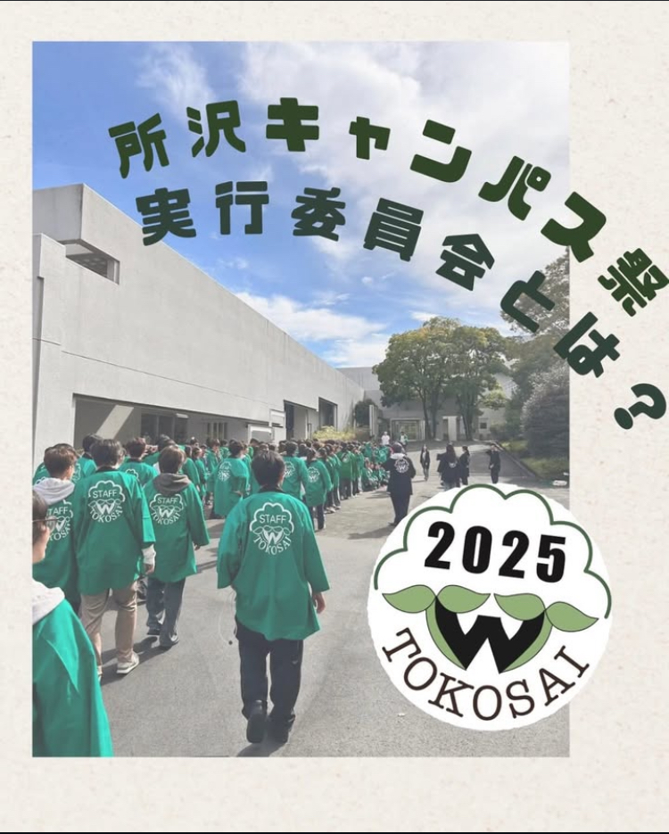

所沢キャンパス祭実行委員会とは？
毎年開催される所沢キャンパス祭の運営を行なっている組織です
会員数は約230名(男女比1:1)
所沢キャンパス最大のサークルです
7つの局で構成されています
代表からのメッセージ
新入生の皆さん、ご入学おめでとうございます！
所沢キャンパス祭実行委員会代表の藤倉美咲と申します。
所沢キャンパス祭実行委員会、通称「所祭」はとこキャンサークル最大で最強にアツいサークルです！！
大学生になって、何か学びのある事がしたいという方、たくさんの友達と出会い、楽しい思い出を作りたいという方、などなどどんな方でも大歓迎です！
"所沢キャンパス祭を成功させる"という大きな１つの目標に向かって、みんなで手を取り合いながら頑張っていくというのは大学生活の中でかけがえのない思い出となり、最高の仲間たちにも出会えます！！
大学生活は意外とあっという間です。ぼーっとしてたら終わっちゃいます。まだ大学生活何しようか迷ってる方はぜひ所祭に入りましょう！！入ったら最高な思い出と仲間ができる事間違いなし！！
所祭委員一同、皆様のご入会を心よりお待ちしております。
代表 藤倉美咲
局紹介

企画開発局
1年生企画
企画開発局の1年生だけで作る企画です!
去年はお化け屋敷を作りました！
高校の文化祭のように同期で仲良く楽しく所祭に向けて準備します！
受験生企画
受験生を対象にした企画を担当します！
公開体験授業や個別相談会の手配及び運営をします。
カフェ企画
オリジナルドリンクと軽食を販売する企画です！
今年のコンセプト「韓国」に合わせたメニューを提供します。
ワークショップ企画
参加者が当日作って持って帰れる、ものづくり体験を行います！
今年はネイルチップ作りを予定してます。
RPG企画
リアルRPG体験ができる企画を担当します！
RPGのストーリーや、スキルや職業などを用いたゲームを制作しようと考えています！
占い企画
本格的な占いからオリジナルな占いまで気軽に楽しめる企画です！
仕事運､健康運､恋愛運､相性など皆さんの未来を占おうと考えています。
芸能人企画
芸能人をお招きするトークショーを企画・運営します！
キャスティングから当日の進行まで一貫して担当できる企画です！
EF企画
所祭の開会式及び閉会式を担う重大企画です！
表彰やイベントなど、お客さんと実行委員がともに楽しめるものを作り上げます！
バラエティゲーム企画
人気テレビ番組の企画を再現します！
1から自分たちのやりたいことを考えて制作、運営まで行います！
脱出ゲーム企画
お客様に様々なステージに挑戦してもらうゲームを企画、運営します。
非現実感を大切にしながら、みんなで作問やステージ作成などを行います。
宝探し企画
スマホを使ってキャンパス中に散りばめられたお宝を探し回る企画です！
様々なミニゲームに参加して豪華景品を獲得することが出来る企画です！
企画開発局長からのメッセージ
企画開発局は他のサークルと掛け持ちしている人から企画に捧げている人までいるので、各々が好きなペースで楽しく集まっています！
1ヶ月に1回『局イベ』を開催しています！自分が担当する企画の中で集まることも多く、自分の企画に沿った遊びによく行っています！脱出ゲームやリアルRPG、他校の学祭など様々な分野があります!
所沢と早稲田を盛り上げるために最後の学生生活を捧げませんか？所祭委員として一緒に楽しく活動できることを楽しみにしています！
企画開発局長 四宮結太郎

総務局
総務局は表立って活躍する局を支える役割を担っています。当日に全ての局員がスムーズに動けるよう、シフトを制作したり、新歓に関わる仕事などを行なっています。毎月の定例会や合宿などの企画、運営は全て総務局が行なっています！
総務局長からのメッセージ
局の雰囲気はみんな明るくて、何か仕事をするとき・イベントがあるときには多くの局員が集まってくれます！ 遊びに関しては、ドライブだったり、バーベキューだったりといろんなイベントがあります！イベントモチベに関しては総務局が1番だと思います。
兼サーしたい人、パソコン使えるようになりたい人、いろんなコミュニティ作りたい人、とりあえず総務局に入ったら楽しいサークル生活を送れること間違いなし！ 待ってます！
総務局長 瀧澤日翔
オープンチャットへの参加はこちらから！
LINEオープンチャットに参加すると、新歓情報や局紹介をチェックできます！！
是非ご参加ください！！
公式Instagramでは、所祭に関する様々な情報を発信しています！
公式マスコットキャラクターのとこみどりのinstagramでは、授業やキャンパスに関する情報を発信しています！
是非フォローしてください！